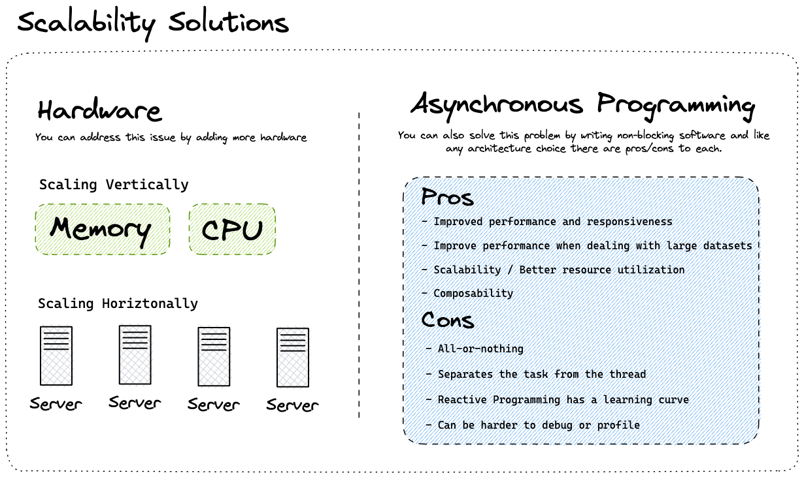
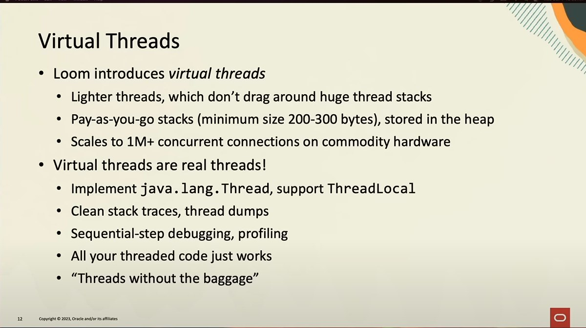

// As of Java 16
record Point(int x, int y) {}
static void printSum(Object obj) {
if (obj instanceof Point p) {
int x = p.x();
int y = p.y();
System.out.println(x+y);
}
}
// As of Java 21
static void printSum(Object obj) {
if (obj instanceof Point(int x, int y)) {
System.out.println(x+y);
}
}
// Requiring the full Records declaration for destructuring feels
// like a chore. (line 13). The components must match, or the compiler won’t be happy:
// Error:
// incompatible types: pattern of type long is not applicable at int
// if (obj instanceof Point(long x, int y)) {
//Instead:
if (obj instanceof Point(var x, var y)) {
// ...
}
Let’s design a Record representing a window
frame, including its origin and size on
the screen:
record Size(int width, int height) { }
record Point(int x, int y) { }
record WindowFrame(Point origin, Size size) { }
// To access the height component of a WindowFrame in
// the nested Size component, we’d need multiple matches:
if (obj instanceof WindowFrame wf) {
if (wf.size() != null) {
System.out.println("Height: " + wf.size().height());
}
}
//Java 21
if (obj instanceof WindowFrame(Point origin, Size(int width, int height))) {
System.out.println("Height: " + height);
}
try {
//...
} catch (Exception _) {
// we don't need the actual exception
}
int acc = 0;
for (Order _ : orders) {
if (acc < LIMIT) {
// the actual order is not used
}
}
Also:
// As of Java 21
if (obj instanceof WindowFrame(_, Size(_, int height))) {
System.out.println("Height: " + height);
}
It's common task with Collections is
getting the first or
last
element
List items = ...;
String first = items.get(0);
String last = items.get(items.size() - 1)
And it's NOT pretty
Collection types supporting accessing the first and last element directly
Collection Type
First Element
Last Element
List
list.get(0)
list.get(list.size() - 1)
Deque
deque.getFirst()
deque.getLast()
SortedSet
sortedSet.first()
sortedSet.last()
For the inverse direction?
Core language extensions and updates
Sequenced collections
interface SequencedCollection extends Collection {
// NEW METHOD
SequencedCollection reversed();
// PROMOTED METHODS FROM Deque
void addFirst(E);
void addLast(E);
E getFirst();
E getLast();
E removeFirst();
E removeLast();
}
Mechanisms and types that work with String
literals and instances built right into the language/JDK to that:
The + (plus) operator
StringBuffer and StringBuilder
String::format and String::formatted
java.text.MessageFormat
// As of Java 21
//The create a template expression, we need two things:
//A template processor
//A template containing wrapped expressions like \{name}
var name = "Ben";
var tempC = 28;
var greeting = STR."Hello \{this.user.firstname()}, how are you?\nIt's \{tempC}°C today!";
The first question you might have is: where does STR come from?
As String -> String templates are most
likely the default use case for String templates, the template
processor STR is automagically imported into every Java source file. So all the inconvenience added
by
Java’s approach is 4 additional characters.
Core language extensions and updates
String templates
Multi-Line Templates and Expressions
// As of Java 21
String customerName = "Java Duke";
String phone = "555-123-4567";
String address = "1 Maple Drive, Anytown";
String json = STR."""
{
"name": "\{customerName}",
"phone": "\{phone}",
"address": "\{address}"
}
""";
// Not only the template itself can be multi-line, expressions can be too, including comments!
var json = STR."""
{
"user": "\{
// We only want to use the firstname
this.user.firstname()
}",
"temperatureCelsius: \{tempC}
}
""";
//Embedded expressions can perform arithmetic operations.
double x = 10.5, y = 20.6;
String p = STR."\{x} * \{y} = \{x * y}";
System.out.println(p);
// Output: 10.5 * 20.6 = 216.3
Core language extensions and updates
440: Record Patterns
441: Pattern Matching for switch
443: Unnamed Patterns and Variables (Preview)
431: Sequenced Collections
430: String Templates (Preview)
445: Unnamed Classes and Instance Main Methods (Preview)
Core language extensions and updates
Simpler Main Methods
Let’s take a look at how to write your first Java program.
package com.beliefdrivendesign;
public class MyAwesomeApp {
public static void main(String... args) {
// Awesome code goes here
}
}
Less is More
class MyAwesomeApp {
void main() {
// Awesome code goes here
}
}
This means we can write more than main() method in a class. The Java compiler will search the main()
method in the following sequence. Whatever the JVM finds the first main() method in the sequence, it
will use it to launch the program:
A static void main(String[] args) method
A static void main() method without any arguments
A void main(String[] args) instance method without static keyword
A void main() instance method without static keyword and arguments
Core language extensions and updates
Simpler Main Methods
For example, in the following program, we have created two main methods.
//An Unnamed Class with Two main() Methods
void main(String[] args) {
System.out.println("Main method with args");
}
void main() {
System.out.println("Main method without args");
}
In the sequence, the void main(String[] args) comes before the void main(), so the program output
will be:
Main method with args
Core language extensions and updates
Rules to Create and Use an Unnamed Class
There are certain rules to abide by to create the unnamed classes correctly. Let us check them out.
As the class has no name, we can’t reference or instantiate it any way ourselves. It resides in the
unnamed package in the unnamed module. Besides that, it behaves almost like a “normal” class
declaration. We can’t use certain features, though, like implementing an interface, extending
another type, referencing the class by name, generating documentation with javadoc, etc.
void main() {
// Awesome code goes here
}
This is preview language feature, disabled by default
The following advantages of generational ZGC add up to a more productive environment for Java
applications:
Less Interruptions: Your program will run much more
continuously thanks to these improved memory management strategies.
Effective Memory Use: Generational ZGC reduces memory
use, freeing up RAM for additional crucial tasks.
Reduced CPU Burden: Generational ZGC lightens the load
on your computer’s central processing unit (CPU).
However, there are certain disadvantages to Generational ZGC as well, such as:
Added complexity: Compared to non-generational ZGC,
generational ZGC is a more complicated garbage collector. This may make problem-solving and
debugging more challenging.
Impact on performance for specific workloads: Not every
workload is a good fit for generational ZGC. Applications that often allocate and deallocate
objects, for instance, could see a decrease in performance while using Generational
ZGC.
Performance and infrastructure improvements
439: Generational
ZGC
442: Foreign
Function & Memory API (Third Preview)
Performance and infrastructure improvements
442: Foreign Function & Memory API (Third Preview)
The Foreign Function & Memory API was first previewed in JDK 19, then in JDK 20
The Foreign Function & Memory API enables Java applications to call native libraries and process
native data by invoking foreign functions and safely accessing foreign memory (e.g. outside JVM).
I am looking forward to the first non-preview version of this feature in future Java releases!
It's still preview and targeted for JDK 22
Extensions to multi-threaded code
444: Virtual Threads
446: Scoped Values (Preview)
453: Structured Concurrency (Preview)
Extensions to multi-threaded code
444: Virtual Threads
446: Scoped Values (Preview)
453: Structured Concurrency (Preview)
Extensions to multi-threaded code
444: Virtual Threads
Extensions to multi-threaded code
444: Virtual Threads
Extensions to multi-threaded code
444: Virtual Threads
Extensions to multi-threaded code
444: Virtual Threads

Extensions to multi-threaded code
444: Virtual Threads
Extensions to multi-threaded code
444: Virtual Threads

Demo
Extensions to multi-threaded code
444: Virtual Threads
446: Scoped Values (Preview)
453: Structured Concurrency (Preview)
some gtexts
private int[] findSubArray(int[] array, int targetSum) {
int sum = 0;
int start = 0;
for (int i = 0; i <= array.length; i++) {
while (sum > targetSum && start < i - 1) {
sum = sum - array[start];
start++;
}
if (sum == targetSum) {
System.out.println("bingo");
}
if (i < array.length) {
sum = sum + array[i];
}
}
return null;
}